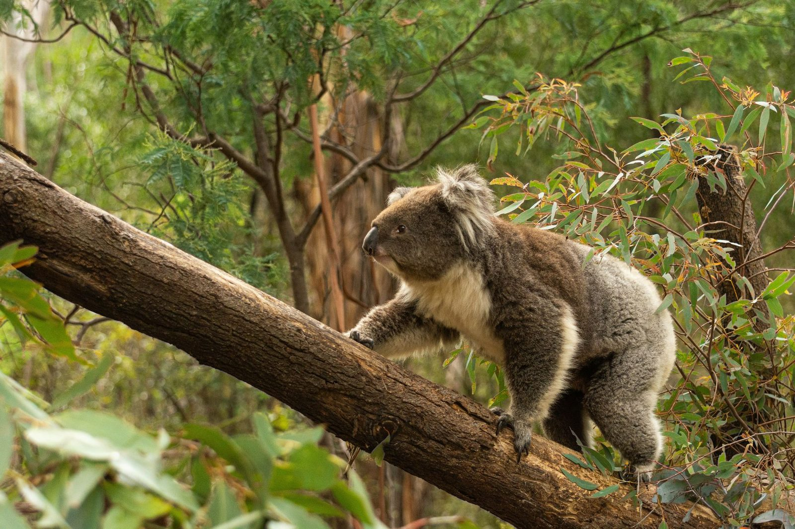

Skip to content
We acknowledge the Traditional Custodians of Country throughout Australia.
We pay our respects to Elders past and present.
About
Projects
▾
All Projects
Growing National Parks
Saving Species
Healing the Land
Partner With Us
▾
Ways to Partner
Government Partnerships
Corporate Partnerships
Impact
▾
Our Impact
Impact Reports
Get Involved
▾
Ways to Get Involved
Corporate Volunteering
Workplace Giving
Fundraising
Gifts in Wills
Donate Land
Stories
▾
Articles
Contact Us
Search
Donate

Home
/
Search
Search
Branch out and explore.
Search our projects, stories, reports and ways to get involved.
What are you looking for?
Search